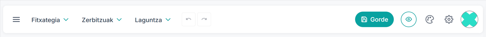
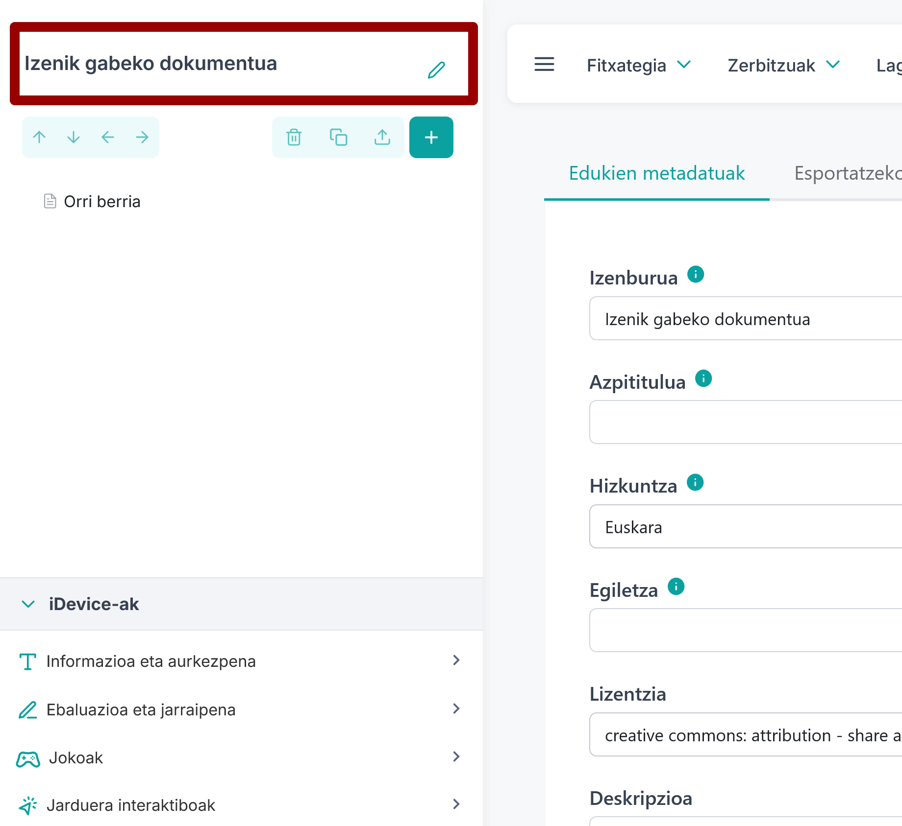
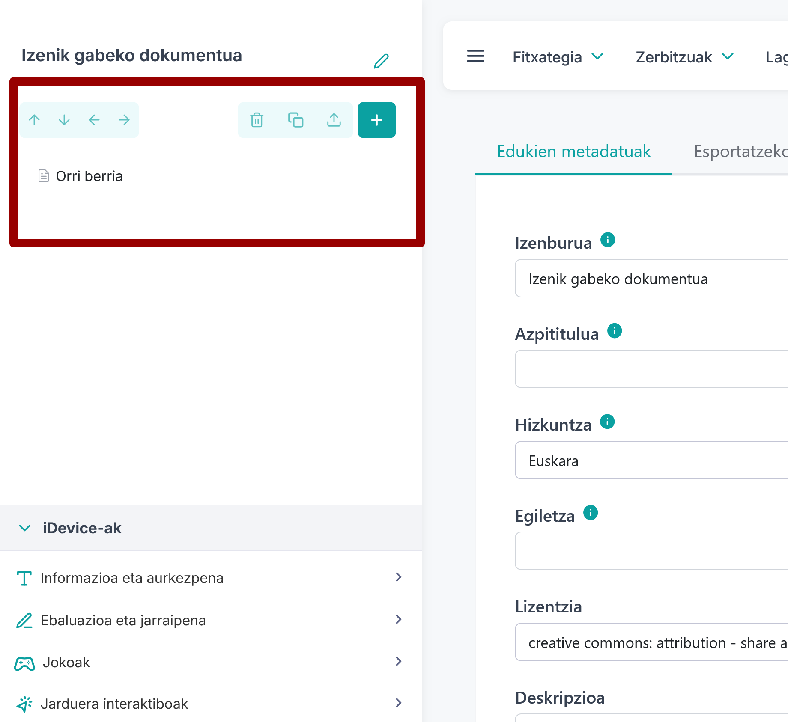
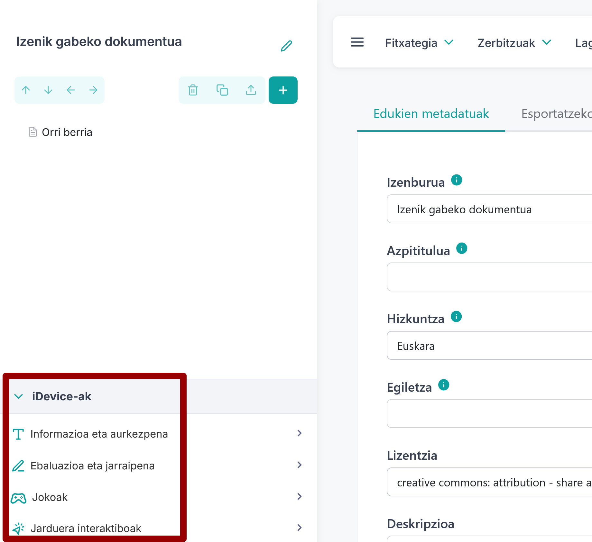

eXeLearning interfazea intuitiboa eta eskuragarria izateko diseinatuta dago, Hiru atal nagusitan banatuta dago:
- Goiko menu-barra: proiektua kudeatzeko funtsezko tresnak ditu.
- Alboko zutabea: proiektuaren izenburua, egitura-panela eta iDevice-en panela ditu.
- Erdiko arloa: Edukia Editatzeko Arloa.

Menu barra
Goiko aldean dagoen barrak proiektua kudeatzeko funtsezko tresnak ditu: artxiboa, zerbitzuak eta laguntza, bai eta beste funtzionalitate batzuetarako sarbideak ere.

Fitxategia menua
Menu horretatik proiektuak ireki eta gorde ditzakegu.
Halaber, inprimatzeko eta esportatzeko (mahaigaineko bertsioan) edo deskargatzeko (online bertsioan) aukera ematen du, hainbat formatu estandarretan. Besteak beste, webgunerako formatuak (HTML), liburu elektronikoak (ePub3) eta hezkuntza-estandarrak (SCORM edo IMS, adibidez) behar dira Moodle bezalako plataformekin lan egiteko.

Zerbitzuak menua
Menu horretatik , besteak beste, funtzio hauetara sar gaitezke:
- Baliabideei buruzko txostena: proiektuan erabilitako baliabide guztiak (fitxategiak, irudiak, bideoa, etab.) biltzen dituen taula, zein orrialdetan eta kutxatan dagoen adierazita. CSV formatuan deskarga daiteke.
- Estekak baliozkotzea: proiektuaren esteka hautsiak dituen taula, proiektuaren orrialdea eta kutxa adierazten ditu. CSV formatuan deskarga daiteke.
- Fitxategi-kudeatzailea: eduki konplexuak txertatzea errazten du.

Laguntza menua
eXeLearningburuzko informazioa, egungo bertsioa, lege-oharrak, web-orria eta proiektuaren beste informazio garrantzitsu batzuk biltzen ditu-i

Botoiak eta beste ikono batzuk

- Gorde. Gorde proiektua. Gogora dezagun ideia guztiek itxita egon behar dutela gorde ahal izateko.
- Aldez aurreko bistaratzea. Edukia aldez aurreko ikuspegian erakusten du, eta horixe ikusiko da Webgunearen esportazioan.
- Estiloak. Estiloa lehenetsita instalatutako batera aldatzeko edo berria inportatzeko aukera ematen du.
- Proiektua konfiguratzea. Aukera ematen du proiektuen metadatuak sartzeko, esportazio-lehentasunei buruz erabakitzeko – adibidez, orrialde-kontagailu bat, erabilerraztasun-barra bat edo bilatzaile bat eranstea – edo kode pertsonalizatua gehitzeko.
- [Momentuz ez!] Partekatu (online bertsioan bakarrik ikus daiteke). Hainbat pertsonak proiektu berean aldi berean lan egin ahal izatea errazten du, horretarako lotura partekatuz.
- Erabiltzailearen profila. Sarbidea ematen du:
-Erabiltzailearen lehentasunak. Edukien hizkuntza eta lizentzia definitzeko aukera ematen du.
-Saioa itxi/Irten.
Alboko panela
Alboko panel hori proiektua antolatzeko eta orrietan txertatuko diren eduki-multzoetara sartzeko bidea da.
Izenburua
Proiektuaren izenburua. Proiektuaren konfigurazioa atalean ere sar edo alda daiteke izenburua (goiko barra).

Egitura-panela
Egitura-panelak edukia orrietan eta azpi-orrietan antolatzeko aukera ematen du. Erabiltzaileak edukia egituratu dezake, orrialde berriak sortzeko, ezabatzeko, bikoizteko edo berrantolatzeko aukera emanez.

Gainera, orrialde bakoitzean haren propietateak alda daitezke.

iDevice-ak panela
iDeviceak (eduki-blokeak) tresnaren elementu nagusia dira. Puzzle bateko blokeak edo "piezak" dira, eduki mota desberdinak erraz txertatzeko aukera ematen dutenak, testuak, irudiak, bideoak, audioak eta jarduera interaktiboak barne. Interfazean, iDevice horiek kategoriatan biltzen dira erraz aurkitzeko:
- Informazioa eta aurkezpena. Informazioa erakusten dute, baliabideak antolatzen dituzte edo edukia aberasten dute irisgarritasunarekin eta hainbat bitartekorekin.
- Ebaluazioa eta jarraipena. Galdetegiak eta ezagutzak edo aurrerapenak egiaztatzeko beste tresna batzuk eskaintzen dituzte, atzeraelikadura emateko aukerarekin.
- Jokoak. Joko-mekanikak erabiltzen dituzte ikaskuntza motibatzeko eta indartzeko, ebaluazio-presiorik gabe.
- Jarduera interaktiboak. Zuzeneko elkarreragina eskatzen dute, ikaskuntza aktiboa eta saiakuntza-errorea sustatuz.
- Zientziak. Arlo edo gai espezifikoetako edukiak lantzeko diseinatuak.

Atal horietako bakoitzean klik eginez gero, kategoriaren iDeviceak agertuko dira.
Lan eremua
Lan eremu nagusia da, eta bertan eraikitzen da proiektuaren edukia. Sortzen hasteko, hautatutako iDevice sakatuko edo arrastatuko dugu iDevices paneletik edo lan-eremuaren beheko aldean agertzen den gogokoen barratik. Barra honetan agertzen diren iDevicak eskuineko gurpilean klik eginez alda daitezke.

Kutxak Vs iDevice
Orrialde bakoitzaren edukia kutxetan antolatzen da. Kutxa bakoitzak ikono bat eta izenburu bat izan ditzake lotuta, eta nahi adina iDevice izan ditzake.
iDevice bat lan-eremura arrastatzen dugunean, lehendik dagoen kutxa baten barruan (beste iDevice batzuen gainean edo azpian) edo zuzenean mihisean kokatu ahal izango dugu. Kasu horretan, kutxa bat sortuko da automatikoki, hari eusteko. iDevice editatu eta gorde ondoren, kutxaren izenburua eta ikonoa editatu ahal izango ditugu.
Kutxak eta iDevice-ak editatu, klonatu, ezabatu, mugitu eta esportatu egin daitezke bakoitzaren goiko eskuinaldean dagoen tresna-barratik. Gainera, propietateetan beste alderdi batzuk konfigura daitezke.